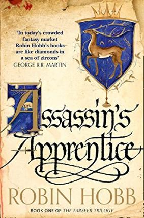

My favorite book is
Assassin's Apprentice
You can find the book here
about the book:
I liked the book because:
A quote from the book:
A favorite quote of mine from the book is:Most prisons are of our own making. A man makes his own freedom, too.
A place I've Enjoyed Visiting:

Thailand
A beautiful country, great beaches and nice people.
I liked the country because:
It's a fun place with chill vibes.
its location:
My Favorite Foods List:
- Pizza
- Veggie burgers & sweet potato fries
- Stir fry noodles